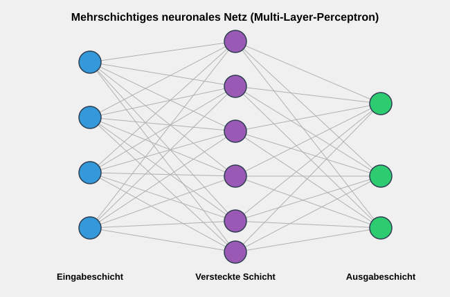

Überblick › LB 10/11 KI und Projektmanagement
11.8 Neuronale Netze und Deep Learning
1. Das Vorbild: das biologische Neuron
Unser Gehirn besteht aus Milliarden von Nervenzellen (Neuronen), die über Verbindungen miteinander Signale austauschen. Ein Neuron empfängt elektrische Signale von anderen Neuronen, „summiert“ sie gewissermaßen auf und feuert selbst nur dann ein Signal, wenn eine bestimmte Reizschwelle überschritten wird. Diese einfache Grundidee – Eingaben sammeln, gewichten und bei Überschreiten einer Schwelle reagieren – diente als Inspiration für das künstliche Neuron, den Grundbaustein neuronaler Netze.
Hinweis: Analogie, keine Kopie
Künstliche neuronale Netze sind nur sehr grob dem biologischen Vorbild nachempfunden. Sie sind mathematische Modelle, keine Nachbildung eines echten Gehirns. Die Analogie hilft aber, die Grundidee zu verstehen.
2. Das Perzeptron
Das Perzeptron ist die einfachste Form eines künstlichen Neurons. Es funktioniert in drei Schritten:
- Jede Eingabe
xwird mit einem Gewichtwmultipliziert. - Alle gewichteten Eingaben werden zu einer Summe addiert.
- Eine Aktivierungsfunktion (hier: ein einfacher Schwellenwert) entscheidet anhand der Summe, ob das Neuron „feuert“ (Ausgabe 1) oder nicht (Ausgabe 0).
2.1 Ein Beispiel zum Nachrechnen
3. Grenzen eines einzelnen Perzeptrons
Ein einzelnes Perzeptron kann nur Probleme lösen, bei denen sich die beiden Klassen durch eine einzige gerade Linie (bzw. Ebene) trennen lassen – man spricht von linear trennbaren Problemen. Es gibt jedoch einfache Probleme, die dafür nicht geeignet sind. Ein bekanntes Beispiel ist die logische Funktion XOR (entweder–oder): Hier lässt sich keine einzige gerade Trennlinie finden, die alle Fälle korrekt zuordnet. Ein einzelnes Perzeptron scheitert daher an dieser Aufgabe.
Hinweis: Warum ist das wichtig?
Marvin Minsky und Seymour Papert zeigten diese Grenze 1969 in ihrem Buch „Perceptrons“. Das trug dazu bei, dass die Forschung an neuronalen Netzen in den 1970er-Jahren stark zurückging (vgl. den ersten KI-Winter in 11.1). Erst mehrschichtige Netze, die mit Backpropagation trainiert werden konnten (populär ab Mitte der 1980er-Jahre), überwanden diese Beschränkung.
4. Mehrschichtige neuronale Netze (Multi-Layer-Perceptron)
Um auch nicht linear trennbare Probleme wie XOR zu lösen, verschaltet man mehrere Perzeptronen in Schichten (Layer). Ein solches Netz besteht typischerweise aus:
- Eingabeschicht (Input Layer): nimmt die Eingabedaten entgegen (z. B. Pixelwerte eines Bildes).
- Versteckte Schicht(en) (Hidden Layer): eine oder mehrere Zwischenschichten, die die Eingaben schrittweise zu komplexeren Merkmalen verarbeiten.
- Ausgabeschicht (Output Layer): liefert das Endergebnis, z. B. die erkannte Ziffer.
In einem vollständig verbundenen Netz ist jedes Neuron mit allen Neuronen der vorherigen Schicht verbunden. Statt eines einfachen Schwellenwerts verwenden moderne Netze meist weichere Aktivierungsfunktionen wie die Sigmoid-Funktion (gibt Werte zwischen 0 und 1 aus) oder ReLU (Rectified Linear Unit, gibt negative Werte als 0 aus, positive Werte unverändert). Die genaue Formel ist an dieser Stelle nicht wichtig – entscheidend ist, dass diese Funktionen dem Netz erlauben, auch komplexe, nichtlineare Zusammenhänge abzubilden.

5. Wie lernt ein neuronales Netz?
Beim Training bekommt das Netz zunächst zufällige Gewichte. Für jedes Trainingsbeispiel berechnet es eine Ausgabe und vergleicht diese mit dem tatsächlich gewünschten Ergebnis – der Unterschied wird als Fehler gemessen. Über ein Verfahren namens Backpropagation wird dieser Fehler rückwärts durch das Netz „zurückgereicht“, um zu bestimmen, wie jedes einzelne Gewicht angepasst werden muss, damit der Fehler kleiner wird. Diese schrittweise Anpassung nennt man Gradientenabstieg.
Eine anschauliche Analogie: Stell dir vor, du stehst nachts im dichten Nebel an einem Berghang und möchtest den tiefsten Punkt (das Tal) finden. Du siehst nur wenige Schritte weit, also tastest du dich vor: An jeder Stelle prüfst du, in welche Richtung es am steilsten bergab geht, und machst einen kleinen Schritt in diese Richtung. Schritt für Schritt näherst du dich so dem tiefsten Punkt an – auch wenn du die gesamte Landschaft nie auf einmal siehst. Genau so „tastet“ sich ein neuronales Netz beim Training Schritt für Schritt zu Gewichten vor, die den Fehler minimieren.
6. Deep Learning
Deep Learning bezeichnet neuronale Netze mit sehr vielen versteckten Schichten („tiefe“ Netze). Je mehr Schichten und Neuronen ein Netz hat, desto komplexere Muster kann es potenziell lernen – allerdings nur, wenn genügend Trainingsdaten vorhanden sind und genug Rechenleistung zur Verfügung steht. Aus diesem Grund werden für das Training großer neuronaler Netze häufig Grafikprozessoren (GPUs) eingesetzt, die viele Berechnungen gleichzeitig (parallel) durchführen können.
Auch moderne Sprachmodelle und Chatbots, wie sie hinter vielen KI-Assistenten stecken, sind im Kern (sehr große) neuronale Netze, die auf riesigen Textmengen trainiert wurden. Mehr dazu erfährst du auf der Seite 11.10 Generative KI und Sprachmodelle.
Hinweis: Nobelpreise 2024 für Grundlagen und Anwendungen neuronaler Netze
2024 wurden gleich zwei Nobelpreise für Arbeiten rund um neuronale Netze vergeben – jeweils an Personen, nicht an ein KI-System:
- Physik: John Hopfield und Geoffrey Hinton für grundlegende Entdeckungen und Erfindungen, die maschinelles Lernen mit künstlichen neuronalen Netzen ermöglichen.
- Chemie: je zur Hälfte an David Baker (computergestütztes Proteindesign) sowie an Demis Hassabis und John Jumper (Google DeepMind) für die Vorhersage von Proteinstrukturen mit dem KI-System AlphaFold.
7. Hyperparameter bei neuronalen Netzen
Wie du bereits bei anderen Verfahren gelernt hast, müssen auch bei neuronalen Netzen vor dem Training Hyperparameter festgelegt werden. Wichtige Beispiele sind:
- Anzahl der Schichten (Tiefe des Netzes)
- Anzahl der Neuronen pro Schicht (Breite des Netzes)
- Lernrate: wie groß die Schritte beim Gradientenabstieg sind (zu groß → das Netz „überspringt“ das Minimum; zu klein → das Training dauert sehr lange)
- Anzahl der Trainingsdurchläufe (Epochen): wie oft der gesamte Trainingsdatensatz durchlaufen wird
Genau wie bei k-Means, k-Nächste-Nachbarn oder Entscheidungsbäumen müssen diese Werte mithilfe der Validierungsdaten ausprobiert und angepasst werden, um ein gutes Ergebnis zu erzielen.
8. Overfitting bei neuronalen Netzen
Auch neuronale Netze können overfitten: Ist ein Netz zu groß (zu viele Schichten oder Neuronen) im Verhältnis zur Menge der Trainingsdaten, kann es die Trainingsdaten „auswendig lernen“, statt allgemeingültige Muster zu erkennen. Die Folge: sehr hohe Genauigkeit auf den Trainingsdaten, aber deutlich schlechtere Ergebnisse auf neuen, unbekannten Daten – das kennst du bereits als Overfitting (vgl. 11.3).
Hinweis: Gegenmaßnahmen
Typische Strategien gegen Overfitting bei neuronalen Netzen sind unter anderem: mehr Trainingsdaten sammeln, das Netz verkleinern, das Training früher beenden (Early Stopping) oder spezielle Techniken wie „Dropout“, die zufällig Teile des Netzes während des Trainings deaktivieren.
9. Anwendungsbeispiele
Neuronale Netze und Deep Learning stecken heute in vielen Anwendungen, zum Beispiel:
- Bilderkennung: z. B. Erkennung von Objekten, Gesichtern oder handgeschriebenen Zahlen
- Sprachassistenten: Spracherkennung und Sprachsynthese
- Autonomes Fahren: Erkennung von Verkehrsschildern, Fußgängern und Fahrbahnmarkierungen
- Texterstellung: Chatbots und generative Sprachmodelle
10. Vor- und Nachteile neuronaler Netze
10.1 Vorteile
- sehr leistungsfähig und flexibel, auch bei komplexen, nichtlinearen Zusammenhängen
- können mit sehr unterschiedlichen Datenarten arbeiten (Bilder, Text, Ton, Zahlen)
10.2 Nachteile
- benötigen in der Regel sehr viele Trainingsdaten
- schwer interpretierbar: Anders als bei einem Entscheidungsbaum lässt sich kaum nachvollziehen, „warum“ ein Netz zu einer bestimmten Entscheidung kommt („Black Box“)
- hoher Rechenaufwand beim Training, oft nur mit leistungsstarker Hardware (GPUs) praktikabel
Praxisbezug: Deep Learning in Forschung und Industrie
Alltag: Die automatische Untertitelung von Videos, die Bildverbesserung deiner Handykamera und Übersetzungsprogramme beruhen auf tiefen neuronalen Netzen.
Beruf: ML Engineers und Deep-Learning-Forschende entwickeln und trainieren solche Netze, oft auf großen GPU-Rechnern. In Sachsen stehen dafür u. a. die Hochleistungsrechner der TU Dresden und der Universität Leipzig zur Verfügung, an denen das KI-Kompetenzzentrum ScaDS.AI Dresden/Leipzig forscht. In der Industrie werden neuronale Netze z. B. zur automatischen Sichtprüfung von Bauteilen oder Wafern eingesetzt.
11. Praktische Umsetzung: handgeschriebene Ziffern erkennen
Erinnerst du dich an die User Story aus dem Projektmanagement-Kapitel (10.5): „Als angehende Entwicklerin möchte ich ein Modell trainieren, das handgeschriebene Zahlen erkennen und zuordnen kann.“ Genau das setzen wir jetzt praktisch um: Mit einem kleinen neuronalen Netz trainierst du ein Modell, das handgeschriebene Ziffern erkennt.
Lade das folgende Notebook herunter: Notebook „Neuronale Netze“.
Das Wichtigste
Perzeptron: berechnet eine gewichtete Summe seiner Eingaben und vergleicht sie mit einem Schwellenwert.
Gewichte: bestimmen, wie stark eine Eingabe die Entscheidung beeinflusst. Sie werden beim Training verändert.
Mehrschichtiges Netz: viele Perzeptronen in Schichten: Eingabeschicht, versteckte Schichten und Ausgabeschicht.
Training: Die Gewichte werden immer wieder in kleinen Schritten so angepasst, dass der Fehler zwischen Vorhersage und tatsächlichem Ergebnis kleiner wird (Gradientenabstieg mithilfe von Backpropagation).
Black Box: Warum ein Netz zu einer bestimmten Entscheidung kommt, lässt sich kaum nachvollziehen.
Grundaufgaben
Aufgabe 11.8.1: Perzeptron-Ausgabe berechnen AFB I
Ein Perzeptron hat zwei Eingaben mit den Werten x₁ = 1 und x₂ = 1 sowie die Gewichte w₁ = 0,4 und w₂ = 0,4. Der Schwellenwert beträgt Θ = 0,9.
- Berechne die gewichtete Summe.
- Bestimme die Ausgabe des Perzeptrons (0 oder 1).
- Verändere eines der Gewichte so, dass sich die Ausgabe ändert. Gib das neue Gewicht an und begründe deine Wahl.
Aufgabe 11.8.2: Ein Netz für XOR prüfen AFB II
- Zeichne die vier Eingabekombinationen von XOR in ein Koordinatensystem (x₁ nach rechts, x₂ nach oben) und begründe, warum keine Gerade die Punkte mit Ausgabe 1 von denen mit Ausgabe 0 trennt.
- Im XOR-Beispiel oben wird das Gewicht von h₂ am Ausgang von −1 auf −0,5 geändert. Berechnet das Netz dann noch XOR?
Das kann ich jetzt
Grau steht, was der Lehrplan verlangt, darunter, was das für dieses Thema konkret heißt. Hake einen Punkt ab, wenn er in deinem Hefter zusammengefasst ist und du ihn ohne Hilfe kannst. Wie du ihn zusammenfasst, entscheidest du selbst. Die Haken speichert nur dein Browser.
Lehrplan LB 10 Maschinelles Lernen: überwacht, unüberwacht, bestärkend (Kennen von Grundlagen Künstlicher Intelligenz)
Lehrplan LB 10 Sich positionieren zur Nachvollziehbarkeit, Erklärbarkeit, Zuverlässigkeit und Bias von Künstlicher Intelligenz